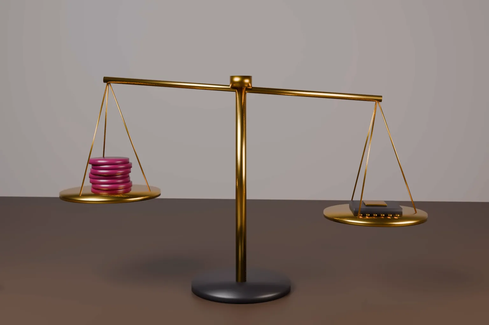

The UPC’s mediation and arbitration centre has put its first FRAND guidance out for comment. SEP holders and implementers have until 26 October 2026 to comment on how the PMAC should handle global licence disputes.
On 25 September 2026 the UPC Patent Mediation and Arbitration Centre (PMAC) opened a consultation on its Draft FRAND Guidelines Discussion Paper. The paper is an outline titled “Guidelines for Dealing with FRAND Disputes in Mediation, Arbitration, Expert Determination and Hybrid Formats”. It was prepared by the PMAC FRAND Guidelines Working Group, chaired by Simon Dack, a member of the PMAC Expert Committee. The Centre invites comments from SEP holders, implementers and other interested parties by 26 October 2026. A second consultation on a full draft will follow.
This note explains what the outline proposes and what it leaves open. It then compares PMAC FRAND mediation and arbitration with the routes in India, the US and the UK.
Background: what the PMAC is
Article 35 of the UPC Agreement establishes a patent mediation and arbitration centre with seats in Ljubljana and Lisbon. The same article states that a patent may not be revoked or limited in mediation or arbitration proceedings. The EPO Official Journal records that the PMAC was inaugurated on 2 June 2026. The UPC Administrative Committee formally adopted the PMAC Rules before the Centre opened.
The PMAC handles disputes arising from European patents, unitary patents and related rights. It can be used on its own or alongside UPC litigation. The FRAND outline is its first attempt to say how those general rules should work for standard essential patent disputes.
What the outline proposes
The paper is divided into four parts and two annexes. It is expressly descriptive and not binding. Where the guidelines and the Rules differ, the Rules prevail.
General matters. Part 1 describes the features of FRAND disputes. These include global portfolio licensing, pools and sensitive comparable licences. They also include parallel litigation in several countries, with injunction and anti suit tactics. It urges parties to define the dispute precisely and early, ideally before the first case management conference or mediation session. It lists confidentiality tools such as confidentiality clubs, separate NDAs and a confidentiality adviser. It also describes the expertise neutrals should have in patents, technology, licensing models, valuation and standardisation.
Arbitration. Part 2 suggests that tribunals break a dispute into components. Essentiality, valuation method, rate, geography and other terms can each get a proportionate procedure. The outline mentions a “FRAND first” sequence as one option. On valuation it stays neutral between methods. It asks the parties to agree a framework early, covering method, comparable licences, valuation date, royalty base and assumptions. For essentiality it discusses portfolio sampling, databases, landscape reports and experts appointed by the tribunal.
The outline lists the forms an award may take. These include an order to conclude a licence on given terms and a standalone determination of the FRAND rate or range. Declarations and money for past use are also possible. It also discusses conditional injunctive relief that bites only if the implementer refuses the terms set. Parties may choose the substantive law for the arbitration. They may not depart from the law that governs the FRAND declaration itself.
Mediation. Part 3 covers routes into mediation, including a suggestion by the UPC or another court. It describes staged mediation, from scope to valuation, and parallel technical and commercial tracks. Limitation periods are suspended during mediation and parties may agree a standstill. A settlement can be confirmed by the UPC on a joint request under Rules 11.2 and 365 of the Rules of Procedure. A hybrid route lets an arbitrator decide only the issues left after mediation.
Expert determination. Part 4 covers determinations of essentiality and of FRAND terms, including royalty rates, for one SEP or a portfolio. A determination is binding unless the parties agree otherwise in writing. The indicative duration is three months. A request on essentiality must identify the technical specification and the portion to be evaluated.
- Comments on the PMAC FRAND outline are due by 26 October 2026 at contact-pmac@unifiedpatentcourt.org.
- The guidelines will not be binding. The PMAC Rules prevail.
- The outline favours early scoping, splitting disputes into components and agreeing the valuation framework at the start.
- Awards could include an order to conclude a licence, a rate determination, or conditional injunctive relief.
- Arbitrators cannot revoke or limit a patent with effect against everyone.
Confidentiality and publication
FRAND arbitration has a known tension. Parties want comparable licences kept secret. The wider market wants reasoned outcomes it can rely on. The outline addresses this directly. Awards and determinations are confidential by default. The Centre may publish them in anonymised form unless a party objects in writing within 60 days. The outline encourages parties not to object. Separately, the PMAC announcement says the PMAC and the EPO have agreed to develop a database of FRAND case law from jurisdictions worldwide.
What the outline does not decide
The outline sets no rate and prefers no valuation method. It does not say whether a party that refuses PMAC arbitration is unwilling in the FRAND sense. It does not mention the CJEU judgment in Huawei v ZTE or any national court decision by name. It also cannot bind the UPC. A UPC judge may suggest mediation, but the PMAC route remains consensual.
Validity is a structural limit. Under Article 35 of the UPC Agreement, a tribunal cannot revoke or limit a patent with effect against everyone. Validity findings bind only the parties. An implementer who wants a patent revoked must still bring proceedings before the UPC, a national court or, within the opposition period, the EPO.
How India, the US and the UK compare
Europe and the CJEU. In Huawei v ZTE (C-170/13, 16 July 2015) the CJEU set out the steps an SEP holder must take before seeking an injunction. Otherwise it may abuse a dominant position. It must alert the implementer and then make a specific written FRAND offer. The implementer must respond diligently, make a FRAND counter offer and provide security if it uses the technology. Where no agreement is reached, the parties may by common agreement ask an independent third party to set the royalty. The PMAC gives that third party option a specialist home linked to the UPC.
United Kingdom. The UK is not part of the UPC. In Unwired Planet v Huawei [2020] UKSC 37 the UK Supreme Court held that English courts can set the terms of a worldwide FRAND licence. Parties who prefer a private forum can arbitrate under general rules. Where the dispute arises from European patents, they can also agree to use the PMAC.
United States. There is no SEP specific public ADR body. The WIPO Arbitration and Mediation Center offers model FRAND submission agreements for mediation, arbitration, expedited arbitration and expert determination. In October 2022 the USPTO and the WIPO Center held a joint webinar on ADR for SEP disputes. Otherwise, US FRAND disputes usually reach the courts as breach of contract, infringement or antitrust claims.
India. Indian SEP disputes are fought mainly in the Delhi High Court, where pro tem security orders are a frequent early remedy. Our note on SEP evidence and claim mapping in India explains how those cases are proved. Section 12A of the Commercial Courts Act, 2015 requires mediation before a commercial suit is filed, unless the suit contemplates urgent interim relief. A settlement under that section has the status of an arbitral award on agreed terms. India has no published FRAND specific ADR guidance comparable to the PMAC outline.
Practical steps for SEP holders
- Comment on remedies. Tell the Centre whether conditional injunctive relief in an award should follow UPC and national court practice, and how it should be enforced.
- Protect comparables. Propose concrete confidentiality protocols for licence production. The outline invites detail on this.
- Plan the forum. If you assert European patents at the UPC, decide early whether a PMAC rate determination could run alongside an infringement action. The outline lists, as an option the parties may agree, letting court proceedings continue on issues not referred.
Practical steps for implementers
- Use the counter offer stage. A proposal to refer the rate to the PMAC can sit alongside a specific FRAND counter offer and security. That record matters if an injunction is later sought.
- Ask for clarity on validity. Comment on how inter partes validity findings should affect the rate, since the tribunal cannot revoke.
- Indian handset and IoT makers. Groups exposed in both Delhi and Europe should map a single global strategy. A PMAC determination of global terms may also help settle Indian proceedings. Our international patent support for Europe, the US and PCT filings covers that planning.
Frequently asked questions
What is the PMAC at the Unified Patent Court?
It is the Patent Mediation and Arbitration Centre created by Article 35 of the UPC Agreement, with seats in Ljubljana and Lisbon. It offers mediation, arbitration, expert determination and hybrid procedures for disputes arising from European patents, unitary patents and related rights. It was inaugurated on 2 June 2026.
Can a FRAND rate be set by arbitration in Europe?
Yes, if both parties agree. The PMAC outline describes awards that order a licence on given terms or determine a FRAND rate or range. An expert determination of FRAND terms is also possible and is binding unless the parties agree otherwise in writing.
How do I comment on the PMAC FRAND guidelines?
Send comments to contact-pmac@unifiedpatentcourt.org by 26 October 2026. The Centre asks for views on the structure, the content and any topics that are missing. A further public consultation on the full draft will follow.
Official source
- PMAC, Launch of public consultation on the Draft FRAND Guidelines Discussion Paper, 25 September 2026
- PMAC FRAND Guidelines Outline, draft for discussion
- Agreement on a Unified Patent Court, Article 35
- EPO Official Journal 2026, A33
- CJEU, Huawei Technologies v ZTE, C-170/13, 16 July 2015
- UK Supreme Court, Unwired Planet v Huawei [2020] UKSC 37
- WIPO Arbitration and Mediation Center, FRAND ADR
- USPTO and WIPO webinar on ADR for SEP disputes, 6 October 2022
- Commercial Courts Act, 2015 (India Code)